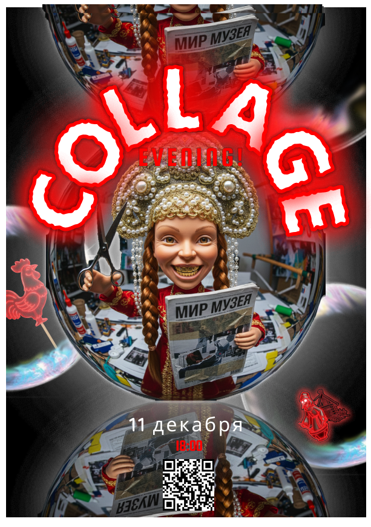

Задача
Разработать серию афиш для мероприятий культурного центра, ориентированных на молодую аудиторию (18–25 лет).
Ключевая задача - уйти от традиционного «музейного» визуального языка (стереотипные орнаменты, декоративные шрифты, клишированные образы) и создать современную систему, которая передаёт атмосферу каждого события и говорит с аудиторией на её языке.
Решение
Я отказалась от единого шаблона в пользу подхода «каждое событие - отдельное настроение».
Каждая афиша строится как самостоятельная визуальная история, где меняются:
- цветовая палитра
- типографика
- композиция
- визуальные образы
При этом серия остаётся связанной за счёт общего принципа:
- живые, нестандартные визуальные решения вместо стоковых клише
- современная типографика с акцентом на ритм и контраст
- элементы коллажа и визуального шума для создания энергии и привлечения внимания
Примеры афиш



collage.png';">Результат
Афиши привлекли внимание целевой аудитории и использовались в анонсах мероприятий. По обратной связи и посещаемости можно отметить, что визуальный стиль стал более заметным и «читаемым» для молодой аудитории.
Проект подтвердил, что даже традиционный культурный контент может быть переосмыслен через современный визуальный язык без потери содержания.
Моя роль
Дизайнер Визуальная система Подготовка к печати